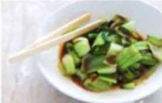

Japanese Vegetarian
Five week counrse in london
A five week introduction to traditional Japanese vegetarian meals, teaching you a selection of rice and noodle dishes.
Bok Choi

Sauces Masterclass
One day workshop
An intensive one-day course looking at how to create the most delicious sauces for use in a range of Japanese cookery.
Teriyaki Sauce
Popular Peccipees
Contact